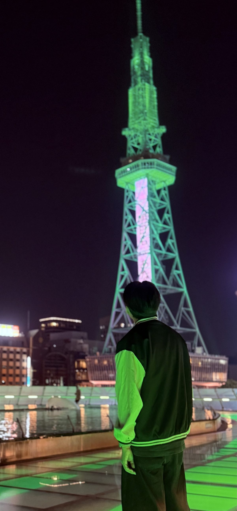

Stellise
睡眠から、出発まで。
朝の流れを整えるiPhoneアプリ。
睡眠中の音と体動を端末内で解析し、天気・交通・予定に合わせて朝の行動を組み立てます。2名開発で、全体統括、センサー・外部APIを含む機能実装、App Storeへの申請と公開を担当しました。
- 生の音声・体動データを外部へ送らないオンデバイス解析
- SwiftUI / TensorFlow Lite / CoreMotion / Firebase / StoreKit
- App Store公開後、8回のアップデートを実施

Yunosuke Tokiwai / iOS Developer
名古屋国際工科専門職大学でソフトウェア開発を学んでいます。
企画から実装、App Storeへの公開、その後の改善まで取り組んでいます。
制作物
睡眠から、出発まで。
朝の流れを整えるiPhoneアプリ。
睡眠中の音と体動を端末内で解析し、天気・交通・予定に合わせて朝の行動を組み立てます。2名開発で、全体統括、センサー・外部APIを含む機能実装、App Storeへの申請と公開を担当しました。
子どもの絵をAIが読み取り、問いかけへの答えを取り入れながら、その子だけの物語と読み聞かせ音声をつくる対話システム。
個人開発｜フロントエンド、バックエンド、AI連携を設計・実装
React · TypeScript · FastAPI · Gemini · AivisSpeech
GitHubで見る ↗社内文書を外部の生成AIへ送らず、利用者の権限に応じて検索・回答する中小企業向けローカルRAG。
共同開発｜追加学習、権限制御、承認付き文書編集、導入手順を担当
Python · FastAPI · Qdrant · vLLM · Docker · QLoRA
GitHubで見る ↗手持ちコスメと美容記録を一元管理し、自分に合うケアや次の商品選びにつなげるiOSアプリ。
3名チーム｜iOS開発担当。49名への街頭アンケートを仕様へ反映
Swift · SwiftUI · Combine · PhotosUI
GitHubで見る ↗
Yunosuke Tokiwai
Nagoya, Japan
自己紹介
名古屋国際工科専門職大学でソフトウェア開発を学んでいます。画面だけでなく、企画、要件整理、実装、テスト、リリース、運用まで関われるアプリケーションエンジニアを目指しています。
現在はiOSアプリ開発を軸に、マルチモーダルAIやローカルLLMを使ったプロダクトにも取り組んでいます。
リンク